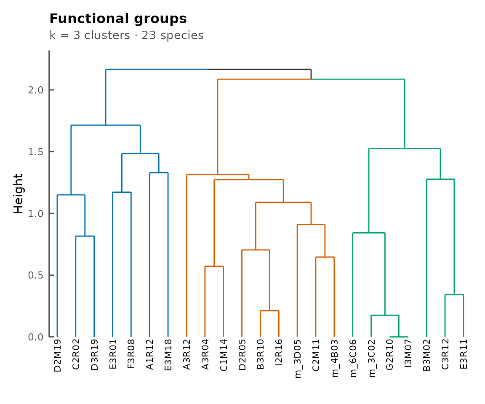

Installation
ramen can be installed from Bioconductor:
if (!requireNamespace("BiocManager", quietly = TRUE))
install.packages("BiocManager")
BiocManager::install("ramen")Overview
ramen (Reconstruction and
Alignment of Microbial
Exchange Networks) analyses the
functional similarity of microbial communities from a metabolic network
perspective. Rather than comparing communities by species composition,
ramen asks: which metabolite-to-metabolite pathways
does each community catalyse, and how similar are the resulting
networks?
Key concept: pathways
Throughout ramen, a pathway is a
directed edge from one metabolite to another: “metabolite A is consumed
and metabolite B is produced by at least one species.” This is
not a biochemical pathway in the KEGG or MetaCyc sense
(e.g. glycolysis). Rather, it captures a single metabolic exchange
coupling within the community. A consortium’s full set of pathways forms
a square metabolite-by-metabolite network that encodes its collective
metabolic capability.
Package classes
The package provides three S4 classes that build on Bioconductor’s TreeSummarizedExperiment:
-
ConsortiumMetabolism(CM) – a single community’s metabolic exchange network -
ConsortiumMetabolismSet(CMS) – a collection of CMs with precomputed overlap scores and a dendrogram -
ConsortiumMetabolismAlignment(CMA) – the result of aligning two or more communities
This vignette walks through a complete analysis from data import to
alignment using the bundled misosoup24 dataset (56
metabolic solutions from MiSoSoup). For details on
alignment metrics, see
vignette("alignment", package = "ramen"); for a gallery of
all plot types, see
vignette("visualisation", package = "ramen").
Why “consortium” and not “community”?
ramen deliberately uses the term consortium
throughout. A consortium here is defined by its metabolic
function – the set of metabolite-to-metabolite pathways its
member species collectively catalyse – not by its taxonomic composition.
Two assemblages with entirely different species rosters but identical
exchange networks are, from ramen’s perspective, the same
consortium; conversely, two assemblages with the same species but
different active pathways are different consortia. This functional
framing follows a long-standing argument in microbial ecology that
ecosystem behaviour is more robustly predicted by what microbes
do than by which microbes are present (Falkowski, Fenchel &
Delong 2008, Science 320:1034).
Key Concepts
A short glossary of terms used throughout the package:
- Consortium – a microbial assemblage characterised by its metabolic exchange network, not its species composition (see above).
-
Pathway – in the
ramensense, a directed metabolite-to-metabolite edge: metabolite A is consumed and metabolite B is produced by at least one species. Not a KEGG/MetaCyc biochemical pathway. -
Assay – one of the six m x m
metabolite-by-metabolite matrices stored in a
ConsortiumMetabolismobject (Binary, nSpecies, Consumption, Production, EffectiveConsumption, EffectiveProduction). - FOS – Functional Overlap Score; the primary similarity metric between two consortia, computed as the Szymkiewicz-Simpson coefficient on expanded binary pathway matrices.
-
Szymkiewicz-Simpson – an asymmetric set-overlap
coefficient
|X intersect Y| / min(|X|, |Y|)that measures how completely the smaller set is contained in the larger. -
Alignment – the operation of putting two or more
consortia in correspondence in a shared metabolite/pathway space and
summarising their similarity, returning a
ConsortiumMetabolismAlignment. - MAAS – Metabolite Abundance Adjusted Score; a flux-magnitude-weighted variant of FOS that down-weights pathways with very small fluxes.
Data import
The misosoup24 dataset
ramen ships with misosoup24, a list of 56
metabolic solutions. Each element is a data.frame with columns
metabolites, species, and fluxes,
where negative fluxes indicate consumption and positive fluxes indicate
production.
Metabolite identifiers follow the BiGG namespace (King et al. 2016): short lowercase codes such as
ac(acetate),co2(CO2),etoh(ethanol), andpyr(pyruvate). Double-underscores encode stereochemistry:ala__L= L-alanine,ala__D= D-alanine. Look up any identifier at https://bigg.ucsd.edu/metabolites.
Metabolite identifier hygiene
ramen performs string-equality matching
on metabolite identifiers. Two species that consume the same molecule
under different naming conventions will appear to consume two distinct
metabolites in the network: a CM whose edge list mixes ac_e
(BiGG), CHEBI:30089 (ChEBI), and acetate (free
text) for the same compound will yield three separate metabolite nodes
rather than one. The same applies across CMs in a
ConsortiumMetabolismSet or across operands of an
align() call: identifiers must match
character-for-character to be treated as the same metabolite.
Pick one namespace and stick with it across all CMs in a CMS or alignment. The package does not currently provide a name-normalisation helper; cross-namespace mapping (BiGG to ChEBI, ChEBI to free text, etc.) is the user’s responsibility, ideally performed once at the data-import step before constructing CMs.
data("misosoup24")
length(misosoup24)
#> [1] 56
names(misosoup24)[1:8]
#> [1] "ac_A1R12_1" "ac_A1R12_10" "ac_A1R12_11" "ac_A1R12_12" "ac_A1R12_13"
#> [6] "ac_A1R12_14" "ac_A1R12_15" "ac_A1R12_16"
head(misosoup24[[1]])
#> # A tibble: 6 × 3
#> metabolite species flux
#> <chr> <chr> <dbl>
#> 1 ac A1R12 0.773
#> 2 ac I2R16 -10.8
#> 3 acald A1R12 -1.12
#> 4 acald I2R16 1.12
#> 5 ala__D A1R12 0.760
#> 6 ala__D I2R16 -0.760Caution – alternative optima. MiSoSoup is a Mixed Integer Linear Programming (MILP) enumerator: for a single underlying metabolic model it returns multiple alternative optimal solutions to the same growth problem. Two such alternatives will typically share most of their pathways and produce very high pairwise FOS values. This high overlap is expected by construction and reflects solver consistency, not biological similarity. When interpreting overlap scores, compare consortia derived from different models or conditions; treat overlap between alternatives of the same model as a sanity check on the enumeration, not as an ecological signal.
Importing raw MiSoSoup YAML
For raw MiSoSoup output (nested YAML), importMisosoup()
parses the data directly into a ConsortiumMetabolismSet
containing one ConsortiumMetabolism per viable solution.
The function accepts a single YAML file, a directory of YAML files, or a
pre-loaded nested list from yaml::read_yaml(). Media-level
exchange bounds are stashed in each CM’s metadata() slot
under $media so they remain accessible if needed.
## Single file -> CMS (not run -- requires external data)
cms <- importMisosoup("path/to/misosoup_output.yaml")
## Directory of YAML files -> CMS merging all consortia
cms <- importMisosoup("path/to/misosoup_dir/", name = "experiment1")
## Pre-loaded list -> CMS (name required)
raw <- yaml::read_yaml("path/to/misosoup_output.yaml")
cms <- importMisosoup(raw, name = "experiment1")
## Access stashed media bounds for a specific CM
## S4Vectors::metadata(cms@Consortia[[1]])$mediaAlternative input formats
The ConsortiumMetabolism() constructor accepts any
data.frame with columns species, metabolite,
and flux. Custom column names can be specified via
species_col, metabolite_col, and
flux_col.
If your data is in wide format with separate columns for consumed and
produced metabolites, pivotCM() converts it to the long
format that ConsortiumMetabolism() expects:
wide_data <- data.frame(
species = c("Sp_A", "Sp_B", "Sp_C"),
uptake = c("met1", "met2", "met3"),
secretion = c("met2", "met3", "met1"),
flux = c(1, 1, 1)
)
long_data <- pivotCM(
wide_data,
species = "species",
from = "uptake",
to = "secretion",
flux = "flux"
)
head(long_data)
#> # A tibble: 6 × 3
#> species met flux
#> <chr> <chr> <dbl>
#> 1 Sp_A met1 -1
#> 2 Sp_A met2 1
#> 3 Sp_B met2 -1
#> 4 Sp_B met3 1
#> 5 Sp_C met3 -1
#> 6 Sp_C met1 1Importing from MICOM / cobrapy
ConsortiumMetabolism() accepts any long-format
data.frame with columns species,
metabolite, and flux (negative = consumption,
positive = production). This makes interoperation with the Python-based
MICOM and cobrapy ecosystems
straightforward: export per-species exchange fluxes to CSV from Python,
then read into R.
A minimal MICOM growth solution can be exported as follows:
import pandas as pd
from micom import Community
from micom.workflows import grow
## com is a pre-built micom.Community
sol = com.cooperative_tradeoff()
## sol.exchanges is a tidy DataFrame with columns
## reaction, metabolite, taxon (species), flux, ...
exchanges = sol.exchanges[["taxon", "metabolite", "flux"]]
exchanges.columns = ["species", "metabolite", "flux"]
exchanges.to_csv("micom_exchanges.csv", index = False)The same pattern works for a plain cobra.Model: iterate
over model.exchanges, record the carrying species, and
write the columns above.
On the R side:
exch <- read.csv("micom_exchanges.csv")
cm_micom <- ConsortiumMetabolism(exch, name = "micom_run1")Building a ConsortiumMetabolism
From misosoup24
cm1 <- ConsortiumMetabolism(
misosoup24[[1]],
name = names(misosoup24)[1]
)
cm1
#>
#> ── ConsortiumMetabolism
#> Name: "ac_A1R12_1"
#> Weighted metabolic network: 2 species, 14 metabolites, 93 pathways.
#> Pathways per species: min 45, mean 46.5, max 48.Synthetic data with synCM()
For quick testing, synCM() generates a random
consortium:
cm_syn <- synCM("Synthetic", n_species = 4, max_met = 8, seed = 42)
cm_syn
#>
#> ── ConsortiumMetabolism
#> Name: "Synthetic"
#> Weighted metabolic network: 4 species, 8 metabolites, 13 pathways.
#> Pathways per species: min 1, mean 4, max 12.Inspecting a CM
A CM inherits from TreeSummarizedExperiment, so standard
dimension accessors work. Rows and columns both correspond to
metabolites (it is a square metabolite-by-metabolite matrix):
dim(cm1)
#> [1] 14 14The six assay matrices encode different views of the network:
SummarizedExperiment::assayNames(cm1)
#> [1] "Binary" "nSpecies"
#> [3] "Consumption" "Production"
#> [5] "EffectiveConsumption" "EffectiveProduction"
#> [7] "nEffectiveSpeciesConsumption" "nEffectiveSpeciesProduction"| Assay | Content |
|---|---|
| Binary | 1 if a pathway exists, 0 otherwise |
| nSpecies | Number of species catalysing the pathway |
| Consumption | Summed consumption flux |
| Production | Summed production flux |
| EffectiveConsumption | Effective number of consuming species |
| EffectiveProduction | Effective number of producing species |
Accessors
name(cm1)
#> [1] "ac_A1R12_1"
species(cm1)
#> [1] "A1R12" "I2R16"
metabolites(cm1)
#> [1] "ac" "acald" "ala__D" "ala__L" "asp__L" "co2" "etoh" "glu__L"
#> [9] "gly" "gthox" "gthrd" "h2o2" "h2s" "pyr"pathways() returns per-pathway summary statistics:
head(pathways(cm1))
#> # A tibble: 6 × 3
#> consumed produced n_species
#> <chr> <chr> <dbl>
#> 1 ac acald 1
#> 2 ac asp__L 1
#> 3 ac co2 1
#> 4 ac etoh 1
#> 5 ac gly 1
#> 6 ac gthrd 1as.data.frame() returns the underlying edge list. Use
this to export a CM’s data for downstream tools:
head(as.data.frame(cm1))
#> met species flux
#> 1 ac A1R12 0.7729250
#> 2 ac I2R16 -10.7673345
#> 3 acald A1R12 -1.1209639
#> 4 acald I2R16 1.1209639
#> 5 ala__D A1R12 0.7603136
#> 6 ala__D I2R16 -0.7603136(consortia() is reserved for containers of CMs –
ConsortiumMetabolismSet and
ConsortiumMetabolismAlignment – since the noun is
plural.)
Replacement methods allow renaming:
Building a ConsortiumMetabolismSet
A ConsortiumMetabolismSet groups multiple CMs. During
construction, ramen automatically expands all binary
matrices to a shared universal metabolite space, computes pairwise
overlap scores, and builds a hierarchical clustering dendrogram. By
default the constructor prints a step-by-step progress trace; pass
verbose = FALSE to silence it.
## Build 20 CMs from misosoup24
cm_list <- lapply(seq_len(20), function(i) {
ConsortiumMetabolism(
misosoup24[[i]],
name = names(misosoup24)[i]
)
})
cms <- ConsortiumMetabolismSet(
cm_list,
name = "MiSoSoup_20",
verbose = FALSE
)
cmsSpecies across the set
species() returns all species with the number of
distinct pathways each catalyses:
species(cms)
#> [1] "A1R12" "A3R04" "A3R12" "B3M02" "B3R10" "C1M14" "C2M11" "C2R02"
#> [9] "C3R12" "D2M19" "D2R05" "D3R19" "E3M18" "E3R01" "E3R11" "F3R08"
#> [17] "G2R10" "I2R16" "I3M07" "m_3C02" "m_3D05" "m_4B03" "m_6C06"Filter by metabolic role – generalists (top fraction by pathway count) or specialists (bottom fraction):
Pathway classification
pathways() with a type argument classifies
pathways by prevalence:
## Pan-consortia: present in many consortia (top fraction)
head(pathways(cms, type = "pan-cons"))
#> # A tibble: 6 × 4
#> consumed produced n_species n_cons
#> <chr> <chr> <int> <int>
#> 1 ac pyr 20 20
#> 2 ala__L pyr 20 20
#> 3 etoh co2 5 20
#> 4 h2s co2 15 20
#> 5 pyr ac 1 20
#> 6 pyr ala__L 1 20
## Niche: present in few consortia (bottom fraction)
head(pathways(cms, type = "niche"))
#> # A tibble: 6 × 4
#> consumed produced n_species n_cons
#> <chr> <chr> <int> <int>
#> 1 LalaDgluMdap ac 1 1
#> 2 LalaDgluMdap ala__D 1 1
#> 3 LalaDgluMdap ala__L 1 1
#> 4 LalaDgluMdap co2 1 1
#> 5 LalaDgluMdap etoh 1 1
#> 6 LalaDgluMdap gthox 1 1The quantileCutoff parameter controls the threshold
(default 0.1).
Functional groups
functionalGroups() clusters species by the Jaccard
similarity of their pathway sets. plotFunctionalGroups()
visualizes the resulting dendrogram:
fg <- functionalGroups(cms)
plotFunctionalGroups(fg, k = 3)
Functional groups dendrogram.
Dendrogram and cluster extraction
plot(cms)
CMS dendrogram with numbered nodes.
The numbered internal nodes can be used to extract sub-clusters:
sub_cms <- extractCluster(cms, node_id = 1)
sub_cmsAlignment
Pairwise alignment
align() compares two CMs and returns a
ConsortiumMetabolismAlignment:
cma_pair <- align(cm_list[[1]], cm_list[[2]])
cma_pair
#>
#> ── ConsortiumMetabolismAlignment
#> Name: "ac_A1R12_1 vs ac_A1R12_10"
#> Type: "pairwise"
#> Metric: "FOS"
#> Score: 0.7634
#> Query: "ac_A1R12_1", Reference: "ac_A1R12_10"
#> Coverage: query 0.763, reference 0.38
#> Pathways: 71 shared, 22 query-only, 116 reference-only.All similarity metrics are computed automatically:
scores(cma_pair)
#> $FOS
#> [1] 0.7634409
#>
#> $jaccard
#> [1] 0.3397129
#>
#> $brayCurtis
#> [1] 0.3115158
#>
#> $redundancyOverlap
#> [1] 0.3397129
#>
#> $coverageQuery
#> [1] 0.7634409
#>
#> $coverageReference
#> [1] 0.3796791Pathway correspondences show shared and unique pathways:
Multiple alignment
align() on a CMS computes all pairwise similarities:
cma_mult <- align(cms)
cma_multThe similarity matrix and summary scores:
scores(cma_mult)
#> $mean
#> [1] 0.5858039
#>
#> $median
#> [1] 0.5651547
#>
#> $min
#> [1] 0.2362205
#>
#> $max
#> [1] 1
#>
#> $sd
#> [1] 0.1764926
#>
#> $nPairs
#> [1] 190
round(similarityMatrix(cma_mult)[1:5, 1:5], 3)
#> ac_A1R12_1 ac_A1R12_10 ac_A1R12_11 ac_A1R12_12 ac_A1R12_13
#> ac_A1R12_1 1.000 0.763 0.538 0.785 0.538
#> ac_A1R12_10 0.763 1.000 0.438 0.542 0.549
#> ac_A1R12_11 0.538 0.438 1.000 0.507 1.000
#> ac_A1R12_12 0.785 0.542 0.507 1.000 0.430
#> ac_A1R12_13 0.538 0.549 1.000 0.430 1.000Pathway prevalence across consortia:
prev <- prevalence(cma_mult)
head(prev[order(-prev$nConsortia), ])
#> consumed produced nConsortia proportion
#> 59 pyr ac 20 1
#> 139 pyr ala__L 20 1
#> 222 etoh co2 20 1
#> 231 h2s co2 20 1
#> 238 pyr co2 20 1
#> 586 ac pyr 20 1For a detailed treatment of alignment metrics, p-values, and accessor
functions, see
vignette("alignment", package = "ramen").
Visualization
Each class has a plot() method. Here is one example per
class; for the full gallery, see
vignette("visualisation", package = "ramen").
plot(cm_list[[1]], type = "Binary")
Metabolic network for the first consortium.
plot(cms)
Dendrogram of 20 consortia.
plot(cma_mult, type = "heatmap")
Pairwise similarity heatmap.
Bioconductor / SummarizedExperiment interoperability
ramen classes inherit from TreeSummarizedExperiment,
so the standard SummarizedExperiment
accessors work out of the box. ramen is a first-class
Bioconductor citizen, not an isolated framework – you can mix its
objects freely with other SE-based tools.
Pull a raw assay matrix:
SummarizedExperiment::assay(cm1, "Binary")[1:5, 1:5]
#> 5 x 5 sparse Matrix of class "dgCMatrix"
#> ac acald ala__D ala__L asp__L
#> ac . 1 . . 1
#> acald 1 . 1 1 .
#> ala__D . 1 . . 1
#> ala__L . 1 . . 1
#> asp__L 1 . 1 1 .Both rows and columns of a CM are metabolites (it is a square m x
m network), so dim(), rowData(), and
colData() all act in metabolite space:
dim(cm1)
#> [1] 14 14
head(SummarizedExperiment::rowData(cm1))
#> DataFrame with 6 rows and 2 columns
#> index met
#> <integer> <character>
#> ac 1 ac
#> acald 2 acald
#> ala__D 3 ala__D
#> ala__L 4 ala__L
#> asp__L 5 asp__L
#> co2 6 co2
head(SummarizedExperiment::colData(cm1))
#> DataFrame with 6 rows and 2 columns
#> index met
#> <integer> <character>
#> ac 1 ac
#> acald 2 acald
#> ala__D 3 ala__D
#> ala__L 4 ala__L
#> asp__L 5 asp__L
#> co2 6 co2A ConsortiumMetabolismSet likewise exposes the SE
interface, with columns indexing the universal metabolite space:
dim(cms)
#> [1] 37 37
head(colnames(cms))
#> [1] "4abut" "LalaDgluMdap" "LalaDgluMdapDala" "ac"
#> [5] "acald" "ala__D"Subsetting works in metabolite space using the standard
[i, j] syntax – here, the first 5 rows and 5 columns:
cms[1:5, 1:5]
#>
#> ── ConsortiumMetabolismSet
#> Name: "MiSoSoup_20"
#> 20 consortia, 14 species, 5 metabolites.
#> Community size (species): min 2, mean 2.1, max 3.
#> Community size (metabolites): min 12, mean 17.9, max 23.
#> Pathways: 0 pan-cons, 8 niche, 1 core, 8 aux (quantile = 0.1).
#> Species: 2 generalists, 9 specialists (quantile = 0.15).This means downstream Bioconductor tooling – e.g. mia
for microbiome analysis or any package consuming
(Tree)SummarizedExperiment objects – can operate on
ramen outputs without any conversion.
Session info
sessionInfo()
#> R version 4.6.0 (2026-04-24)
#> Platform: x86_64-pc-linux-gnu
#> Running under: Ubuntu 24.04.4 LTS
#>
#> Matrix products: default
#> BLAS: /usr/lib/x86_64-linux-gnu/openblas-pthread/libblas.so.3
#> LAPACK: /usr/lib/x86_64-linux-gnu/openblas-pthread/libopenblasp-r0.3.26.so; LAPACK version 3.12.0
#>
#> locale:
#> [1] LC_CTYPE=C.UTF-8 LC_NUMERIC=C LC_TIME=C.UTF-8
#> [4] LC_COLLATE=C.UTF-8 LC_MONETARY=C.UTF-8 LC_MESSAGES=C.UTF-8
#> [7] LC_PAPER=C.UTF-8 LC_NAME=C LC_ADDRESS=C
#> [10] LC_TELEPHONE=C LC_MEASUREMENT=C.UTF-8 LC_IDENTIFICATION=C
#>
#> time zone: UTC
#> tzcode source: system (glibc)
#>
#> attached base packages:
#> [1] stats graphics grDevices utils datasets methods base
#>
#> other attached packages:
#> [1] ramen_0.99.0 BiocStyle_2.40.0
#>
#> loaded via a namespace (and not attached):
#> [1] tidyselect_1.2.1 viridisLite_0.4.3
#> [3] dplyr_1.2.1 farver_2.1.2
#> [5] viridis_0.6.5 Biostrings_2.80.0
#> [7] S7_0.2.2 ggraph_2.2.2
#> [9] fastmap_1.2.0 SingleCellExperiment_1.34.0
#> [11] lazyeval_0.2.3 tweenr_2.0.3
#> [13] digest_0.6.39 lifecycle_1.0.5
#> [15] tidytree_0.4.7 magrittr_2.0.5
#> [17] compiler_4.6.0 rlang_1.2.0
#> [19] sass_0.4.10 tools_4.6.0
#> [21] utf8_1.2.6 igraph_2.3.1
#> [23] yaml_2.3.12 knitr_1.51
#> [25] labeling_0.4.3 graphlayouts_1.2.3
#> [27] S4Arrays_1.12.0 DelayedArray_0.38.1
#> [29] RColorBrewer_1.1-3 TreeSummarizedExperiment_2.20.0
#> [31] abind_1.4-8 BiocParallel_1.46.0
#> [33] withr_3.0.2 purrr_1.2.2
#> [35] BiocGenerics_0.58.0 desc_1.4.3
#> [37] grid_4.6.0 polyclip_1.10-7
#> [39] stats4_4.6.0 ggplot2_4.0.3
#> [41] scales_1.4.0 MASS_7.3-65
#> [43] SummarizedExperiment_1.42.0 cli_3.6.6
#> [45] rmarkdown_2.31 crayon_1.5.3
#> [47] ragg_1.5.2 treeio_1.36.1
#> [49] generics_0.1.4 ape_5.8-1
#> [51] cachem_1.1.0 ggforce_0.5.0
#> [53] parallel_4.6.0 BiocManager_1.30.27
#> [55] XVector_0.52.0 matrixStats_1.5.0
#> [57] vctrs_0.7.3 yulab.utils_0.2.4
#> [59] Matrix_1.7-5 jsonlite_2.0.0
#> [61] bookdown_0.46 IRanges_2.46.0
#> [63] S4Vectors_0.50.0 ggrepel_0.9.8
#> [65] systemfonts_1.3.2 dendextend_1.19.1
#> [67] tidyr_1.3.2 jquerylib_0.1.4
#> [69] glue_1.8.1 pkgdown_2.2.0
#> [71] codetools_0.2-20 gtable_0.3.6
#> [73] GenomicRanges_1.64.0 tibble_3.3.1
#> [75] pillar_1.11.1 rappdirs_0.3.4
#> [77] htmltools_0.5.9 Seqinfo_1.2.0
#> [79] R6_2.6.1 textshaping_1.0.5
#> [81] tidygraph_1.3.1 evaluate_1.0.5
#> [83] lattice_0.22-9 Biobase_2.72.0
#> [85] memoise_2.0.1 bslib_0.10.0
#> [87] Rcpp_1.1.1-1.1 gridExtra_2.3
#> [89] SparseArray_1.12.2 nlme_3.1-169
#> [91] xfun_0.57 fs_2.1.0
#> [93] MatrixGenerics_1.24.0 pkgconfig_2.0.3